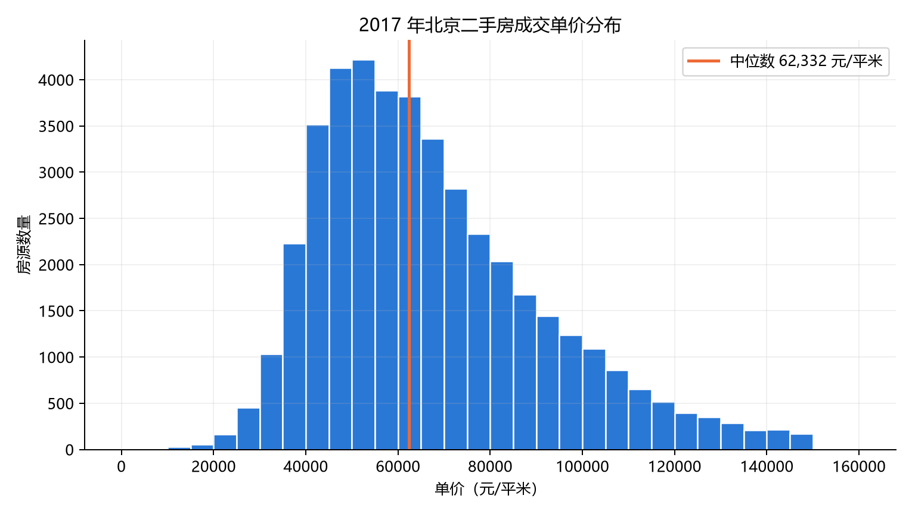
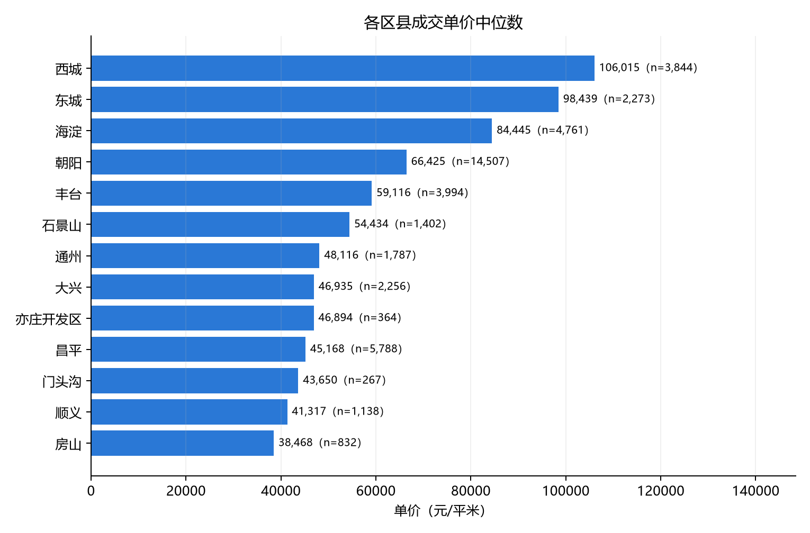
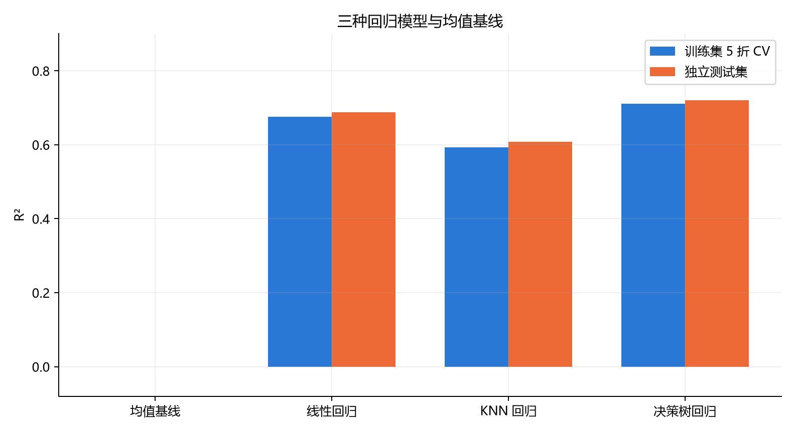
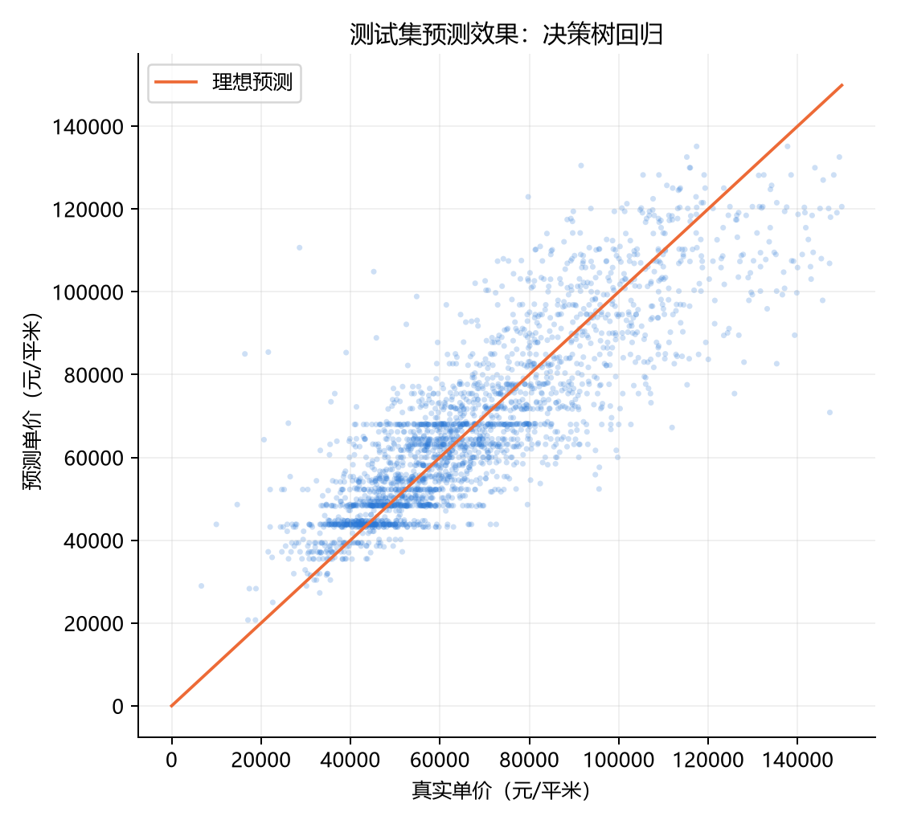

北京二手房单价预测
应用综合实验 · 2017 年成交数据 · 预测目标：每平方米成交价格
43,213清洗后成交记录
3 种回归模型
+0.720最佳模型测试集 R²
1. 数据与做法
使用公开的北京链家二手房成交数据，选取 2017 年记录；剔除明显错误的面积和单价。输入包含面积、户型、房龄、区县及房屋设施等 16 项属性。总价、小区均价和成交时间不作为预测特征。
按固定随机种子划分 34,570 条训练记录与 8,643 条测试记录。在训练集上进行 5 折交叉验证，比较线性回归、KNN 回归和决策树回归，再用独立测试集评估。缺失值填补和类别编码均放在模型管线内。


2. 模型对比
| 模型 | 5 折 CV R² | 测试集 R² | 测试集 MAE | 测试集 RMSE |
|---|---|---|---|---|
| 均值基线 | -0.000 | -0.000 | 19,499 | 24,468 |
| 线性回归 | +0.676 | +0.688 | 10,253 | 13,669 |
| KNN 回归 | +0.593 | +0.608 | 11,055 | 15,323 |
| 决策树回归 | +0.711 | +0.720 | 9,462 | 12,949 |
MAE 和 RMSE 的单位均为元/㎡；均值基线只作参照，不计入三种机器学习模型。


3. 结论与局限
按训练集交叉验证 R² 选择，表现最高的是决策树回归；它在测试集上的 R² 为 +0.720，MAE 为 9,462 元/㎡。
本实验描述 2017 年成交记录，不能直接用于判断当前北京房价。原数据没有可靠的小区分组标识，随机划分的结果可能高估对全新区域房源的预测能力。